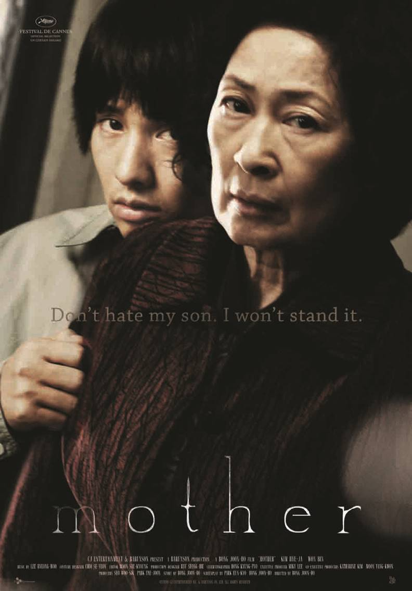

Madre
Diretto da: Bong Joon-ho
Data di rilascio: 28 Maggio 2009
Incassi: $ 17.2 milioni
"Madre" è un film del 2009 diretto da Bong Joon-ho, che esplora i legami familiari, il sacrificio e la ricerca della verità attraverso un thriller avvincente e psicologico.
Trama:
La storia segue una madre determinata a dimostrare l'innocenza del figlio Do-joon, un giovane con disabilità intellettive accusato di un omicidio. Quando le autorità locali chiudono il caso, la madre si imbarca in una disperata indagine personale per scoprire il vero colpevole. Durante il suo viaggio, scopre oscure verità nascoste nella comunità e deve affrontare dilemmi morali mentre cerca di proteggere suo figlio a tutti i costi.
"Madre" è un thriller emotivamente carico e ricco di suspense, con una straordinaria interpretazione di Kim Hye-ja, che cattura la forza, la vulnerabilità e l'ossessione di una madre disposta a tutto per il proprio figlio. Bong Joon-ho combina magistralmente elementi di mistero e dramma, offrendo una profonda riflessione sulla giustizia, la colpa e l'amore incondizionato.